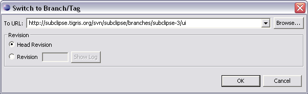

This function is initiated via the menu option.
While a check out operation checks out everything from the desired branch into a new working copy, a switch operation only transfers the changed data to an existing working copy. This can considerably reduce the amount of time it takes to establish the desired working copy as well as dramtically reduce the load on the network during the copy process.

Type the URL of the desired repository location (usually a branch) or click Browse to select a location from the repository. Click OK to switch your working copy to the new location.
Switch works just like Update in that it never discards your local changes. Any changes you have made to your working copy which have not yet been committed will be merged when you do the Switch. If you do not want this to happen, you must either commit your changes before switching, or Revert your working copy to an already-committed revision (typically HEAD).
Related Tasks
Maintaining branches with SVN
Configure Branches/Tags
Related Reference